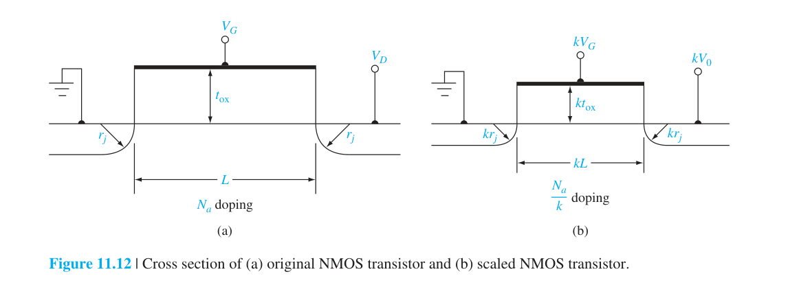
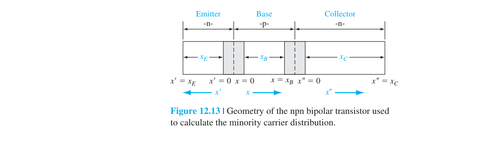
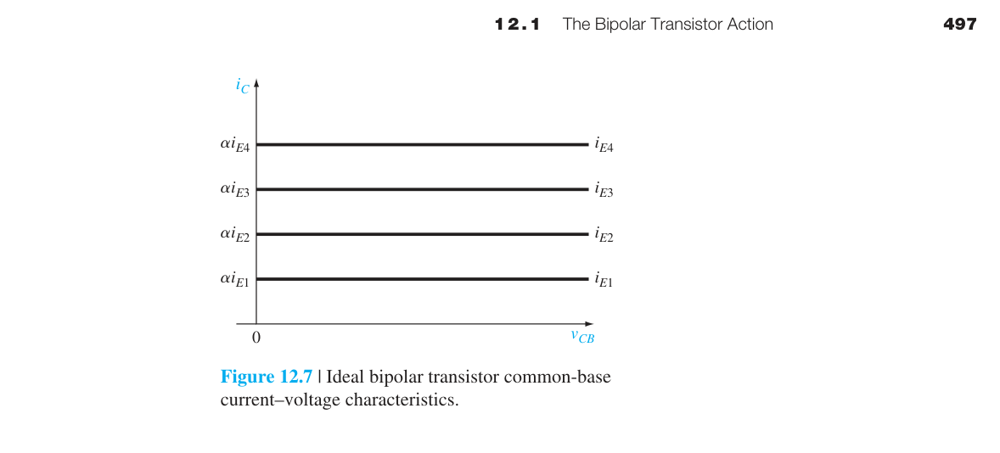
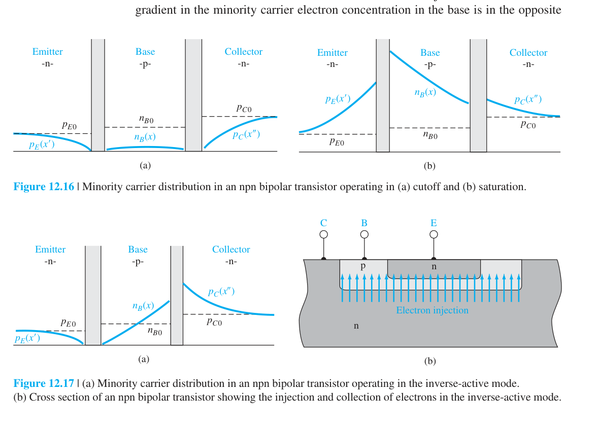
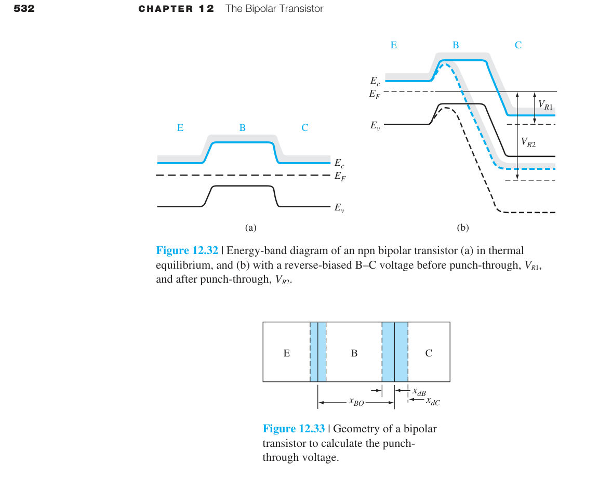
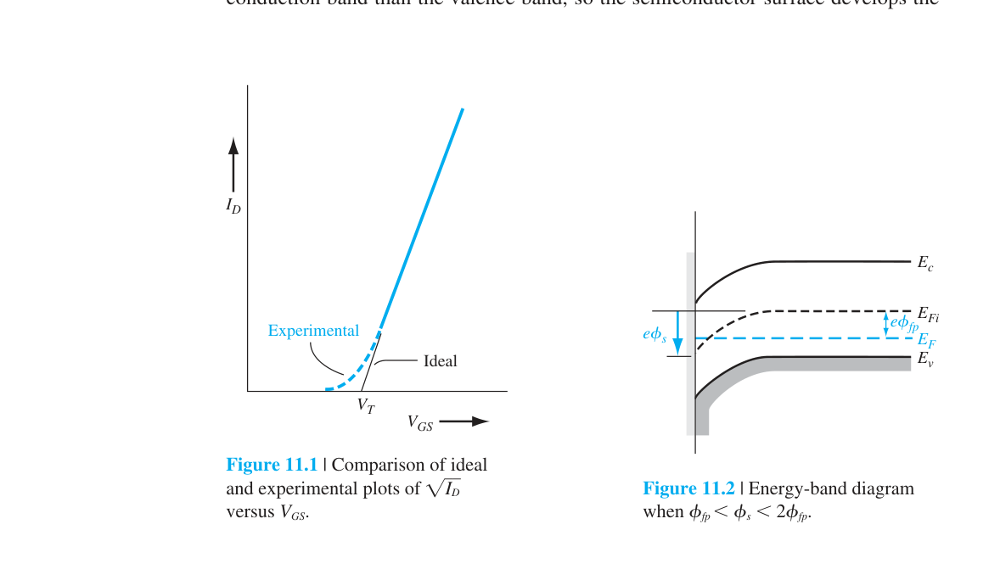

MOSFET 進階概念
第十章建立了 MOSFET 的理想模型——長通道、均勻摻雜、無短通道效應。這個理想模型對於理解 MOSFET 的基本原理至關重要。但任何嘗試過用長通道公式來預測現代奈米級 MOSFET 行為的人都會立刻發現：理想模型完全不準。
本章討論讓理想模型失效的所有效應——以及克服它們的工程解決方案。這些非理想效應不是學術好奇心；它們是每天困擾著晶片設計者和製程工程師的實際問題。每一個效應背後都有一個對應的製程解決方案（LDD、SOI、high-κ、FinFET）——了解這些方案需要先了解它們要解決的問題。
2. 通道長度調變：飽和區 $\\Delta L$→$I_D\\propto(1+\\lambda V_{DS})$，$r_o=1/(\\lambda I_D)$
3. 遷移率退化：垂直電場將載子壓向粗糙 Si/SiO₂ 界面→$\\mu_{eff}=\\mu_0/[1+\\theta(V_{GS}-V_T)]$
4. 速度飽和→$I_D=WC_{ox}(V_{GS}-V_T)v_{sat}$——短通道下平方律退化為線性律
5. Dennard 定電場縮小法則：尺寸和電壓同步除以 $\\kappa$→密度 $\\times\\kappa^2$，功耗 $\\div\\kappa^2$（2005 年後因 $V_T$ 無法再降而失效）
6. DIBL（汲極引發能障降低）：$V_{DS}$↑→汲極空乏區延伸→$V_T$↓→短通道致命問題
7. 熱載子效應：高能電子注入氧化層→$V_T$ 飄移→LDD（輕摻雜汲極）結構緩解
8. FinFET：三面閘極環繞通道→更好的閘極控制→抑制短通道效應→5nm 節點以下主流
9. 窄通道效應：通道寬度縮小→邊緣電場→$V_T$ 升高（與短通道效應方向相反）
10. 輻射效應：游離輻射在氧化層產生陷阱電荷和界面態→$V_T$ 飄移、$S$ 增大

11.2 定電場縮小法則——Moore 定律的物理基礎 ⭐

1965 年，Gordon Moore 觀察到積體電路上的電晶體數量大約每兩年翻一倍。但這條著名的「定律」如果沒有物理上的可行性論證，就只是一條經驗曲線。1974 年，Robert Dennard 發表了定電場縮小法則——論證了MOSFET 可以持續縮小而不會遭遇根本性的物理障礙。
核心思想：如果你把電晶體的所有尺寸（$L$, $W$, $t_{ox}$）和所有電壓（$V_{DD}$, $V_T$）同時除以同一個因子 $\kappa$，並把基板摻雜增加 $\kappa$ 倍，那麼：
- 內部電場保持不變（因為電壓和距離以相同比例縮小）→可靠性不受影響
- 每單位面積的電晶體數量增加 $\kappa^2$ 倍→密度平方增長
- 每個電晶體的延遲時間縮短 $\kappa$ 倍→速度提升
- 每個電晶體的功耗降低 $\kappa^2$ 倍（$C\propto1/\kappa$、$V\propto1/\kappa$、$f\propto\kappa$），而密度增加 $\kappa^2$ 倍，因此理想功耗密度約維持不變；後來電壓無法等比例降低，功耗密度才成為瓶頸

| 參數 | 縮小因子 | 實際效益 |
|---|---|---|
| $L, W, t_{ox}$ | $1/\kappa$ | 尺寸縮小 |
| $V_{DD}, V_T, V_{DS}$ | $1/\kappa$ | 電壓降低→功耗降低 |
| $N_a$（基板摻雜） | $\kappa$ | 保持空乏層寬度同步縮小 |
| 延遲時間 $\tau$ | $1/\kappa$ | 速度提升 $\kappa$ 倍 |
| 功耗 $P$ | $1/\kappa^2$ | ⭐ 功耗急劇降低 |
| 功率-延遲積 | $1/\kappa^3$ | 整體性能指標大幅改善 |
| 密度 | $\kappa^2$ | 每晶片電晶體數量平方增加 |
為什麼 $N_a$ 必須增加？空乏層寬度 $x_d\propto1/\sqrt{N_a}$。當 $L$ 縮小 $\kappa$ 倍時，空乏層寬度也必須同步縮小——否則空乏區會延伸到通道中不該延伸的地方（例如源極和汲極的空乏區在通道下方相遇→產生穿通效應）。增加 $N_a$ 使 $x_d$ 縮小至所需的尺寸。
Dennard 縮小失效後，$V_{DD}$ 不再能隨 $L$ 同步縮小（從 ∼1 V 降到 ∼0.7 V 後就卡住了）。但 $L$ 繼續縮小→內部電場增大→速度飽和、熱載子效應加劇→每代新製程的性能提升幅度從之前的 ∼40% 降到 ∼10–15%。這就是為什麼 Moore 定律在放緩——不是因為電晶體不能再縮小，而是因為縮小不再帶來同等的性能回報。
11.1.3 遷移率退化——當閘極壓得太緊
第十一章假設反轉層中的載子遷移率 $\\mu_n$ 為常數（等於塊材中的低電場遷移率）。現實中，當 $V_{GS}$ 增大時，垂直於通道方向的電場（從閘極指向基板）將反轉層中的電子壓向 Si/SiO₂ 界面。這個界面不是原子級平坦的——存在約 0.2–0.5 nm RMS 的粗糙度。載子被壓在粗糙界面上→界面粗糙度散射增加→有效遷移率下降。
$\theta$（遷移率退化因子）取決於氧化層厚度（$t_{ox}$ 越小→垂直電場越大→$\theta$ 越大）和界面品質。典型值 ∼0.1–0.5 V⁻¹。當 $V_{GS}-V_T=2$ V 且 $\theta=0.3$ 時，$\mu_{\text{eff}}=\mu_0/1.6=0.625\mu_0$——遷移率下降了近 40%。
物理機制——不只是界面粗糙度：除了界面粗糙度散射，垂直電場還會改變載子在反轉層中的量子侷限狀態。反轉層極薄（∼1–5 nm），電子在垂直方向的運動被量子化為離散的次能帶（subbands）。垂直電場越大→電子被壓得越緊→量子侷限越強→最低次能帶的能量升高→更多的電子佔據較高有效質量的次能帶→遷移率進一步下降。這是「表面粗糙度散射+量子侷限效應」的協同作用。
11.1.4 速度飽和——短通道元件最根本的限制
第十一章的長通道模型中，$I_D$ 的平方律來自一個關鍵假設：載子漂移速度與電場成正比（$v_d=\mu_n E$）。這個假設在電場低於 ∼$10^4$ V/cm 時成立。但在短通道元件中——以 $L=20$ nm、$V_{DS}=1$ V 為例——通道中的平均電場高達 $5\times10^5$ V/cm。在這個電場強度下，載子已經遠遠進入速度飽和區（$v_d\approx v_{\text{sat}}\approx10^7$ cm/s，見第五章圖 5.8）。
速度飽和對 $I_D$ 的影響是質變而非量變。當載子以 $v_{\text{sat}}$ 穿越整個通道時：

速度飽和的三個連鎖後果：
① $I_D$ 變為線性而非平方律。$I_D$ 不再隨 $(V_{GS}-V_T)^2$ 增長，而只隨 $(V_{GS}-V_T)$ 線性增長→給定 $V_{GS}$ 下的驅動電流顯著降低。這直接影響了數位電路的開關速度。
② $g_m$ 趨向常數。在長通道飽和區：$g_m=\mu_n C_{ox}(W/L)(V_{GS}-V_T)$→隨 $V_{GS}$ 線性增長。在速度飽和極限：$g_m = WC_{ox}v_{\text{sat}}$→常數——加大 $V_{GS}$ 不再能提高跨導。這對類比放大器設計是災難性的——增益 $A_v=-g_m R_L$ 被固定上限。
③ 飽和提前發生。在長通道中，飽和發生在 $V_{DS}=V_{GS}-V_T$（夾止條件）。在速度飽和極限下，載子在通道中途（$V\ll V_{GS}-V_T$ 處）就已達到 $v_{\text{sat}}$→飽和發生在 $V_{DS}$ 遠小於 $V_{GS}-V_T$ 時→可用的電壓餘裕（voltage headroom）被壓縮。
11.5.3 熱載子效應——高速電子的破壞力
在短通道元件中，即使 $V_{DS}$ 只有 1 V，汲極端的峰值電場也可達 $>10^5$ V/cm。電子在汲極端空乏區中被這個高電場加速→獲得遠高於熱平衡（$kT=0.026$ eV）的動能——成為「熱」載子。某些電子的能量可達數 eV。
熱載子能造成三種破壞：
① 注入氧化層。電子要從 Si 的導帶進入 SiO₂ 的導帶，需要克服 ∼3.1 eV 的能障。熱載子的能量夠高→可以直接越過這個能障進入氧化層。注入的電子在氧化層中移動，可能被氧化層中的缺陷（氧空缺等）捕獲→形成固定電荷→$V_T$ 漂移。這是長期操作中 $V_T$ 不穩定的主要原因。
② 產生界面態。高能電子撞擊 Si/SiO₂ 界面→打斷 Si-H 鍵（鈍化鍵）→產生懸鍵（dangling bond）→這些懸鍵形成能隙中的界面態。界面態會捕捉和釋放通道中的載子→$g_m$ 退化、次臨界斜率劣化、低頻雜訊增加。
③ 氧化層崩潰。長期累積的注入和陷阱充電最終導致氧化層局部電場超過 SiO₂ 的介電強度（∼$10^7$ V/cm）→氧化層永久性擊穿→閘極短路。
輕摻雜汲極（LDD）——對抗熱載子的工程解決方案

LDD 的核心思想：在通道和重摻雜 n⁺ 汲極之間插入一段輕摻雜的 n⁻ 區域。n⁻ 區域的空間電荷密度低→Poisson 方程積分出的電場曲線更平緩→峰值電場降低。LDD 結構中的峰值電場可以從 ∼$5\times10^5$ V/cm 降到 ∼$3\times10^5$ V/cm。因為熱載子注入率對電場有極強的超線性依賴（$\propto e^{-E_0/E}$），電場降低 40% 可以使元件壽命延長數個數量級。
現代延伸 A：SOI、FinFET 與先進 CMOS 結構
SOI——把電晶體放在絕緣體上
在傳統塊材（bulk）MOSFET 中，通道和汲極與基板之間存在 pn 接面→寄生接面電容 $C_{j,DB}$、接面漏電流、以及基板效應（body effect：$V_{SB}$ 增加會使 $V_T$ 增加）。SOI 技術在通道下方放置一層埋入氧化層（Buried Oxide, BOX, 通常 ∼100–200 nm 厚的 SiO₂）→通道完全被絕緣體包圍→消除所有寄生接面。
SOI 的優勢：寄生電容降低 30–50%→開關速度更快、動態功耗更低；接面漏電流消失→待機功耗降低；基板效應消失→$V_T$ 不受 $V_{SB}$ 調變；抗軟錯誤（soft error）能力增強（埋入氧化層阻擋 α 粒子從封裝材料進入通道）。
FinFET——從平面到三維的革命

在平面 MOSFET 中，閘極只從上方控制通道。當 $L_g$ 縮小到 ∼20 nm 以下時，源極和汲極的電場從通道下方（基板側）繞過——閘極失去了對通道底部區域的控制。這些不受控的區域成為次臨界漏電流的路徑。FinFET 把通道豎起來變成一個矽「鰭」→閘極從三面包圍鰭（上方+左右兩側）→閘極的靜電控制力大幅增強→短通道效應被有效抑制。這是為什麼 $L_g$ 能從 20 nm（平面 MOSFET 的極限）繼續縮小到 5 nm 以下的關鍵技術。
GAAFET（閘極全環繞）：FinFET 的下一步進化——通道變成水平奈米線或奈米片，閘極完全環繞通道四面。這實現了終極的靜電完整性。Samsung 2022 年發布了 3 nm GAAFET 製程，TSMC 預計在 2 nm 節點（2025）引入。
現代延伸 B：終極尺寸的物理限制——我們能縮到多小？

Moore 定律不可能永遠持續。本節討論限制 MOSFET 繼續縮小的根本物理障壁——這些不是工程問題（可透過更聰明的設計克服），而是物理定律設定硬性限制。
氧化層的量子穿隧限制
SiO₂ 氧化層的厚度不能小於 ∼0.5 nm（約兩個分子層）。當 $t_{ox}<1$ nm 時，直接量子穿隧（direct tunneling）導致閘極漏電流密度呈指數增長：$J_G \propto e^{-t_{ox}\sqrt{2m^*\phi_B}/\hbar}$。對 $t_{ox}=1.5$ nm→$J_G\sim1$ A/cm²；$t_{ox}=0.8$ nm→$J_G\sim10^3$ A/cm²→閘極漏電功耗超過通道導通功耗→電晶體失去意義。high-κ 材料（HfO₂, $\kappa\sim25$）可以物理厚度 5 nm 達到等效 0.8 nm 的電容→穿隧漏電降低 ∼$10^4$ 倍。但當等效厚度也縮到 ∼0.5 nm 時，穿隧限制再次出現。
摻雜波動（Random Dopant Fluctuation, RDF）
在 $L_g=10$ nm 的 MOSFET 中，通道體積約為 $10\times10\times10$ nm³ $=10^{-18}$ cm³。若 $N_a=10^{18}$ cm⁻³→通道中僅有 ∼10 個摻雜原子。這 10 個原子的確切數量和位置因每個電晶體而異（Poisson 統計→標準差 $\sqrt{10}\approx3$）→每個電晶體的 $V_T$ 都不同。在一個有 100 億個電晶體的晶片上，$V_T$ 的統計分布寬度可達 ∼50–100 mV——大到足以破壞 SRAM 單元的讀寫穩定性和邏輯時序。
功耗密度——黑暗矽（Dark Silicon）
即使每個電晶體的功耗隨縮小而降低，但密度以 $\kappa^2$ 增長→每單位面積的總功耗可能增加。現代高效能晶片的功耗密度已接近 ∼100 W/cm²——接近核反應爐的熱通量。散熱能力（空冷∼50 W/cm²，液冷∼200 W/cm²）限制了能同時全速運行的電晶體比例。這就是「黑暗矽」現象——晶片上有大比例的電晶體必須關閉或降頻以避免過熱。
11.3.2 窄通道效應（Narrow-Channel Effects）
短通道效應是通道長度縮小的問題。通道寬度縮小同樣帶來效應——窄通道效應。當 $W$ 縮小到與空乏區寬度可比時，閘極邊緣的電場線「繞射」到通道側面的空乏區中→需要額外的閘極電壓來覆蓋側面空乏電荷→$V_T$ 升高。
與短通道效應（$V_T$ 下降）相反，窄通道效應使 $V_T$ 上升。在現代 FinFET 中，通道是三維的鰭片（fin），$W$ 的定義不再是簡單的平面寬度，而是鰭片高度×2+鰭片寬度——窄通道效應的物理圖像需要重新理解。
11.1.5 彈道傳輸——當通道比平均自由程還短
在傳統的漂移-擴散模型中，載子在通道中經過多次散射（碰撞）才從源極到達汲極。平均自由程 $\ell = v_{th}\tau \approx 10$–$50$ nm（室溫 Si）。當通道長度 $L$ 縮小到與 $\ell$ 可比（$L < 50$ nm）時，載子可能在不經過任何散射的情況下從源極飛到汲極——這就是彈道傳輸。
平均自由程的數值計算：$\ell = v_{th}\tau$。Si 中 $\mu_n = 300$ cm²/V·s（短通道中的有效遷移率）→$\tau = m^*\mu/e = 0.26\times9.11\times10^{-31}\times300\times10^{-4}/(1.6\times10^{-19}) \approx 4.4\times10^{-14}$ s。$v_{th} = \sqrt{8kT/(\pi m^*)} \approx 2.3\times10^7$ cm/s。$\ell = 2.3\times10^7\times4.4\times10^{-14} \approx 10$ nm。所以 $L < 10$ nm 的通道確實進入彈道區域。
在完全彈道極限下，$I_D$ 不再受通道中的散射限制，而是受源極端的熱離子注入率限制——就像蕭特基二極體的 thermionic emission。飽和電流：
其中 $v_{\text{inj}} \approx v_{th}/2$（注入速度≈熱速度的一半）。對 Si，$v_{th}\sim10^7$ cm/s→$v_{\text{inj}}\sim5\times10^6$ cm/s。這比速度飽和的 $v_{sat}\sim10^7$ cm/s 還低——所以彈道傳輸在 Si 中不一定比速度飽和更優。但在高遷移率材料（如 InGaAs，$v_{th}$ 更高）中，彈道傳輸可能是突破速度瓶頸的途徑。
11.4.3 離子植入閾值調整
$V_T$ 的精確控制對數位電路至關重要——同一晶片上的所有 nMOS 必須有相同的 $V_T$。$V_T$ 取決於 $N_a$（基板摻雜）和 $C_{ox}$（氧化層厚度），但這些參數的製程控制精度有限。
離子植入（Ion Implantation）是精確調整 $V_T$ 的標準方法：在通道表面下方植入一層極薄的摻雜層（通常用 B 對 nMOS，P 或 As 對 pMOS）。植入劑量 $Q_I$（atoms/cm²）直接改變 $V_T$：
植入深度（由離子能量決定）必須在反轉層形成的位置附近——太深則對 $V_T$ 無效，太淺則影響載子遷移率。典型的調整範圍：$\pm 100$–$300$ mV，植入劑量 $10^{12}$–$10^{13}$ cm$^{-2}$。
植入能量與深度的關係：離子進入 Si 後會與晶格原子碰撞而減速。投影射程 $R_p$（平均停止深度）取決於離子能量和質量：
| 離子 | 能量 (keV) | $R_p$ (nm) | 用途 |
|---|---|---|---|
| B（硼） | 10 | ∼30 | 淺接面 $V_T$ 調整 |
| B（硼） | 50 | ∼150 | 標準 $V_T$ 調整 |
| P（磷） | 50 | ∼60 | nMOS $V_T$ 調整 |
| As（砷） | 50 | ∼30 | 極淺 S/D 擴展 |
退火（Annealing）：植入過程會嚴重破壞晶格（每個離子撞出數千個 Si 原子）→必須在 900–1100°C 退火來修復晶格損傷並活化摻雜原子。現代製程使用快速熱退火（RTA，∼1 秒）或雷射退火（毫秒級）以防止摻雜原子過度擴散。
11.5 輻射與熱載子效應
除了前節討論的熱載子效應（通道中的高能電子注入氧化層），輻射環境也會在氧化層中產生電荷。
輻射效應的兩種類型：
① 總劑量效應（TID, Total Ionizing Dose）：累積的輻射劑量在氧化層中產生永久性電荷。$\gamma$ 射線或質子撞擊 SiO₂→產生電子-電洞對。電子很快被掃出（$\sim10^{-5}$ cm²/V·s），但電洞被陷阱捕獲（$\sim10^{-11}$ cm²/V·s）→形成正的固定氧化層電荷→$V_{FB}$ 負移→$V_T$ 下降。典型漂移量：
| 輻射劑量 (rad(Si)) | $\Delta V_T$（未加固） | $\Delta V_T$（加固後） |
|---|---|---|
| 100 | ∼50 mV | < 10 mV |
| 10k | ∼1 V | ∼100 mV |
| 100k | 元件失效 | ∼500 mV |
② 單一事件效應（SEE, Single Event Effects）：高能粒子（宇宙射線中的重離子或質子）穿過電晶體→沿路產生大量電子-電洞對→瞬間電流脈衝。可能導致：SEU（單一事件翻轉，SRAM 位元翻轉→軟錯誤）、SEL（單一事件鎖定，觸發寄生 SCR→大電流→永久損壞）、SEB（單一事件崩潰，功率元件中）。
抗輻射設計方法：
- 薄氧化層（$<10$ nm）：減少電洞陷阱數量→TID 敏感度降低。
- SOI 結構：埋入氧化層消除體矽中的寄生路徑→抗 SEL。
- 特殊的退火處理（含氫退火→減少界面態）。
- 三模冗餘（TMR）：三個 SRAM 單元投票→容忍 SEU。
- 矽化物閘極取代多晶矽閘極：消除空乏區中的電荷陷阱。
本章摘要
- 定電場縮小（Dennard Scaling）：尺寸和電壓同時除以 $\kappa$→內部電場不變→功耗 $\propto1/\kappa^2$。在 ∼90 nm 後因 $V_T$ 無法繼續降低而失效。
- 遷移率退化：$\mu_{\text{eff}}=\mu_0/[1+\theta(V_{GS}-V_T)]$。垂直電場壓迫載子至粗糙 Si/SiO₂ 界面→界面散射+量子侷限→$\mu$ 下降。
- 速度飽和：短通道 $I_D=WC_{ox}(V_{GS}-V_T)v_{\text{sat}}$（線性取代平方律）。$g_m$→$WC_{ox}v_{\text{sat}}$（常數上限）。Si 中 $v_{\text{sat}}$ 是材料常數→無法繞過。
- 熱載子效應：高能電子（數 eV）注入氧化層→$V_T$ 漂移、界面態、氧化層崩潰。LDD 結構降低峰值電場 30–50%。
- SOI：埋入氧化層消除寄生接面電容和基板效應→更快、更低功耗。FinFET：三面閘極→靜電控制增強→$L_g$ 可縮小至 3 nm。
- 終極限制：量子穿隧→$t_{ox}>0.5$ nm。RDF→$V_T$ 統計變異（通道中 ∼10 原子）。功耗密度→散熱限制→黑暗矽。
本章學習資源
第 11 章公式摘要 · 章末習題 · 章內例題
推導、假設與章末診斷
進階模型的適用條件
- Dennard scaling 假設所有線性尺寸與電壓同除以 $\kappa$、摻雜乘 $\kappa$、遷移率與材料參數不變。
- 速度飽和近似 $v\to v_{sat}$ 要求通道場接近或超過 $E_c=v_{sat}/\mu$；中間區需連續速度模型。
- 短通道臨界電壓模型依賴二維 Poisson 邊界；一維 MOS capacitor 公式不再充分。
- 彈道模型要求通道長度與平均自由程可比，接觸注入與量子傳輸取代局部漂移速度。
中間推導：定電場縮小
- $L,W,t_{ox},V\to1/\kappa$，因此電場 $V/L$ 不變。
- 單顆電容 $C\sim C_{ox}WL$：$C_{ox}\to\kappa C_{ox}$、面積 $\to1/\kappa^2$，故 $C\to C/\kappa$。
- $I\sim\mu C_{ox}(W/L)V^2\to I/\kappa$。
- 延遲 $CV/I\to1/\kappa$；單顆動態功耗 $CV^2f\to1/\kappa^2$，密度乘 $\kappa^2$，理想功耗密度不變。
章末練習與概念診斷
Dennard scaling 為何在約 90 nm 後失效？
$V_{DD}$ 與 $V_T$ 無法再等比例降低，否則次臨界漏電與雜訊容限惡化；電場與功耗密度因此上升。
FinFET 解決的是遷移率不足，還是閘極控制不足？
主要是以多面閘極改善靜電控制、降低短通道效應；遷移率仍受材料、界面與應力影響。
延伸計算練習
完成上方診斷後，請在不查公式的情況下重建代表推導，並改變一個參數檢查極限行為。更多含數值與解答的題目：本章完整習題頁。